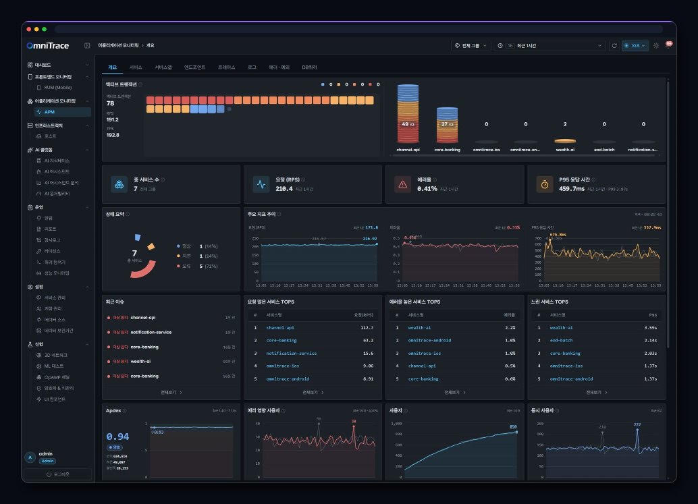
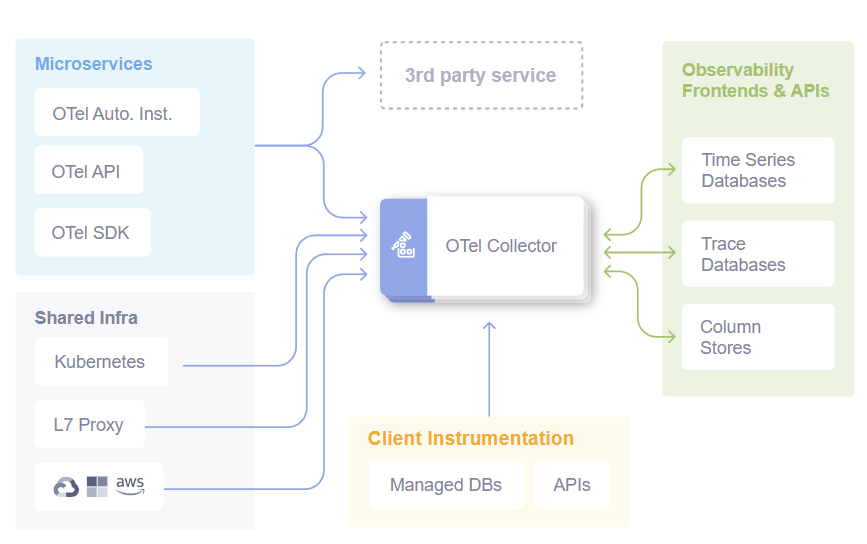
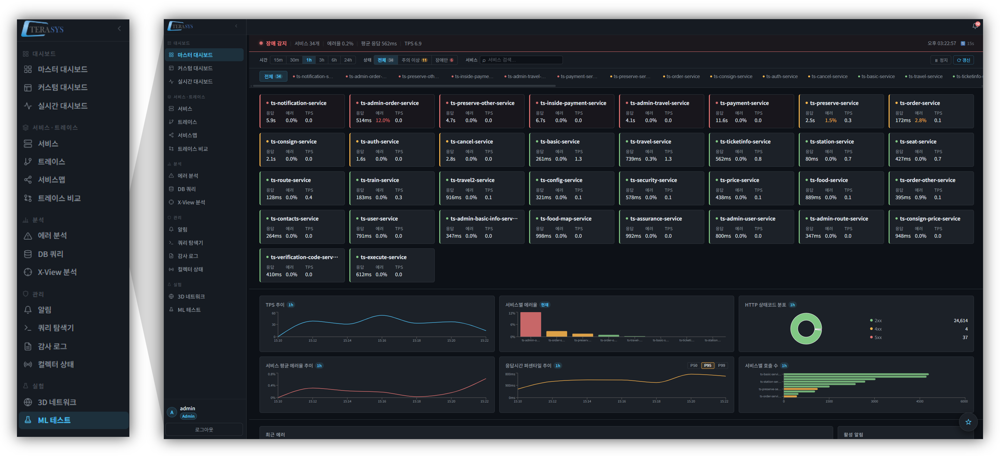
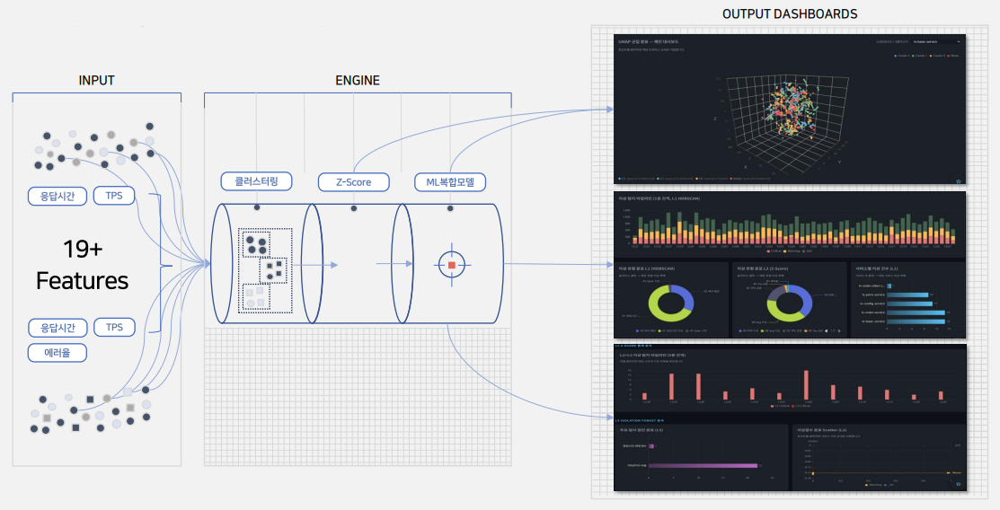
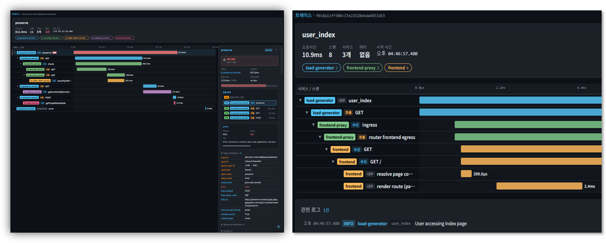
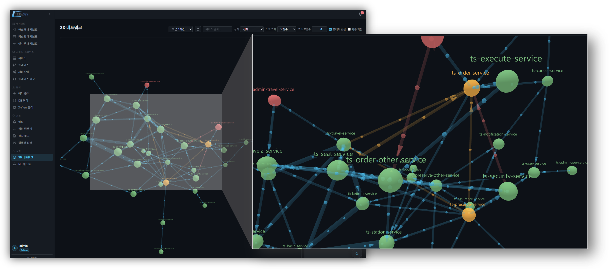
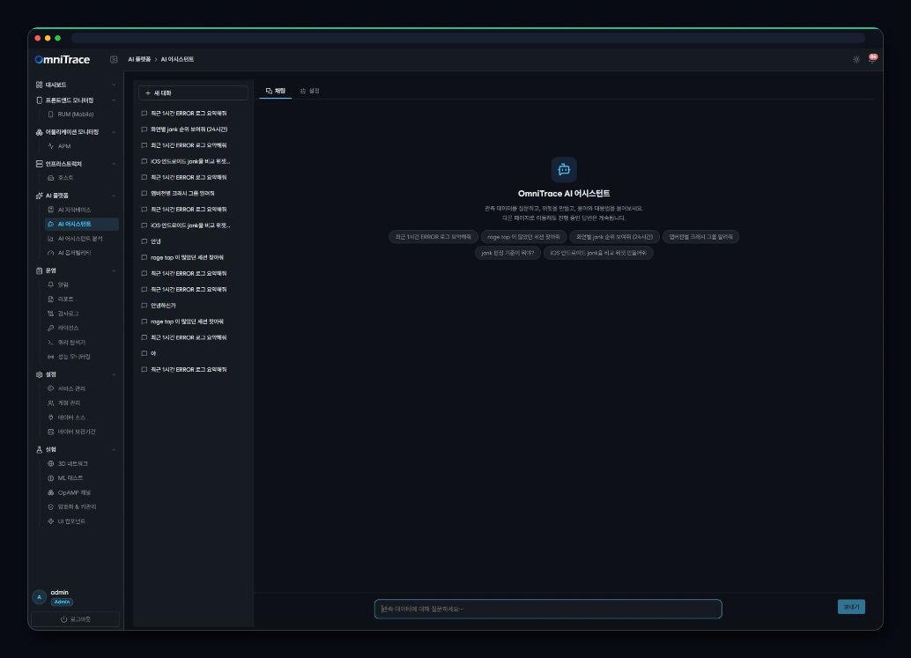
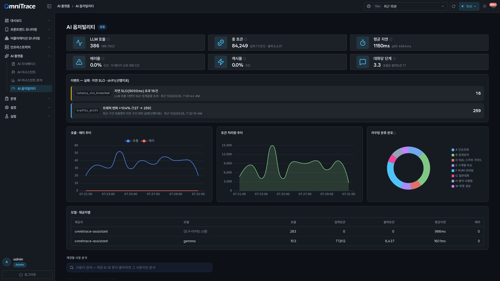
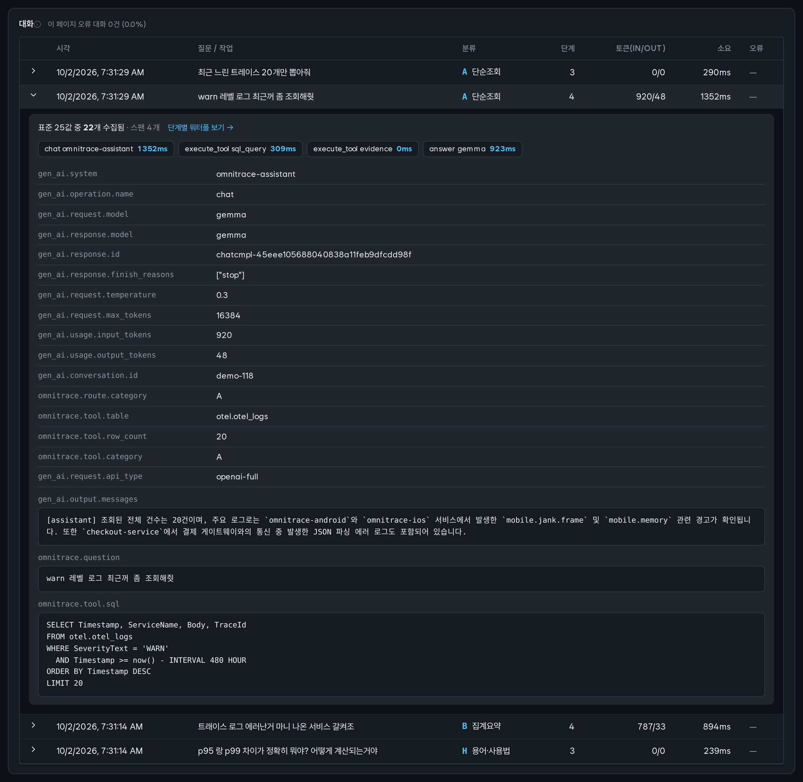
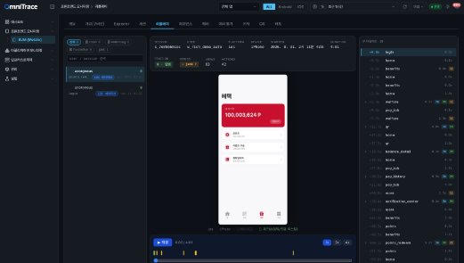

OpenTelemetry 기반 온프레미스 APM 플랫폼 OmniTrace에서 AI 어시스턴트를 만들었습니다. 운영자가 자연어로 물으면 실제 데이터로 답을 받습니다. 외부 API를 쓸 수 없는 폐쇄망 고객 환경이라 자체 호스팅한 Gemma 4를 씁니다. 그 위에 RAG 문서 라이브러리와 채점 시스템까지 직접 구축했습니다.
APM 화면은 데이터가 많지만 원하는 숫자를 찾으려면 대시보드와 쿼리를 직접 다뤄야 합니다. AI 어시스턴트는 "지난주 크래시가 많았던 화면이 어디야?" 같은 질문을 받아 의도를 분류하고 ClickHouse SQL 조회, 지식베이스 검색, 대시보드 위젯 생성 중 맞는 도구로 답합니다.
OTel Collector와 ClickHouse 수집 인프라는 팀과 함께 구축했고 그 위의 LLM 레이어(의도 라우팅, Text-to-SQL, 근거 주입, RAG 문서 라이브러리, 채점 시스템, PII 마스킹)를 맡았습니다.






질문 하나가 화면에서 출발해 답변으로 돌아오기까지 이 계층을 거칩니다.
표시가 있는 칸이 직접 만든 부분입니다.
모델은 제품의 스키마와 지표 정의를 모르면 그럴듯한 SQL과 설명을 지어냅니다. 그래서 답변 근거로 넣을 지식 카드 59장을 같은 형식으로 썼습니다. 관리 화면에서 고치면 바로 검색에 반영되게 했습니다.
| 카드 종류 | 수 | 쓰임 |
|---|---|---|
| SQL 예시 | 32장 | 크래시, 프리즈, 세션 같은 지표별 질문과 SQL 쌍. Text-to-SQL의 few-shot으로 들어갑니다. |
| 런북 | 15장 | 장애 대응과 보안 점검 절차. 어떻게 대응할지 묻는 질문의 근거가 됩니다. |
| 지표 정의 | 12장 | p95, Apdex, crash-free처럼 운영자가 묻는 용어의 정의입니다. |
프롬프트나 도구를 바꿀 때마다 좋아졌는지 나빠졌는지를 숫자로 보려고 채점 시스템을 직접 만들었습니다. 답변이 실제 근거에 기반했는지 보는 항목의 통과율은 93.4%였습니다. 처음 만든 골든셋은 단일 질문 SQL 생성에서 금방 100%가 나와 더 이상 차이를 보여 주지 못했습니다. 그래서 멀티턴 대화, 지시어가 섞인 질문, 여러 의도가 한 번에 들어간 질문으로 평가셋을 넓혔습니다.
같은 답변을 다시 채점하면 점수가 흔들리는 문제는 채점 결과 캐시와 라우팅 결정성으로 줄였습니다. 품질 회귀 감지와 라벨링 화면도 함께 만들었습니다.

어시스턴트의 라우팅, SQL 생성, 답변 단계를 gen_ai 스팬으로 내보내 OmniTrace에서 직접 추적합니다. 질문과 답변은 ClickHouse에 압축해 90일 보관하고, 분석 화면에서 사용자별 이용 내역을 볼 수 있습니다.


사용자가 그 순간 본 앱 화면을 시간축으로 재생하고 같은 trace_id로 백엔드 호출과 나란히 봅니다. "API가 3초 걸렸을 때 사용자는 어떤 화면이었나"를 한 화면에서 확인할 수 있습니다. 풀스크린샷 대신 화면을 노드 트리로 재구성해 앱과 네트워크 부담을 줄이고 개인정보 노출을 막았습니다.

Gemma 4 · BGE-M3 · BM25 · Qdrant · LoRA
Python · FastAPI · Go
React · TypeScript
ClickHouse · PostgreSQL · OpenTelemetry
Docker Compose · Nginx · GitHub Actions(self-hosted)